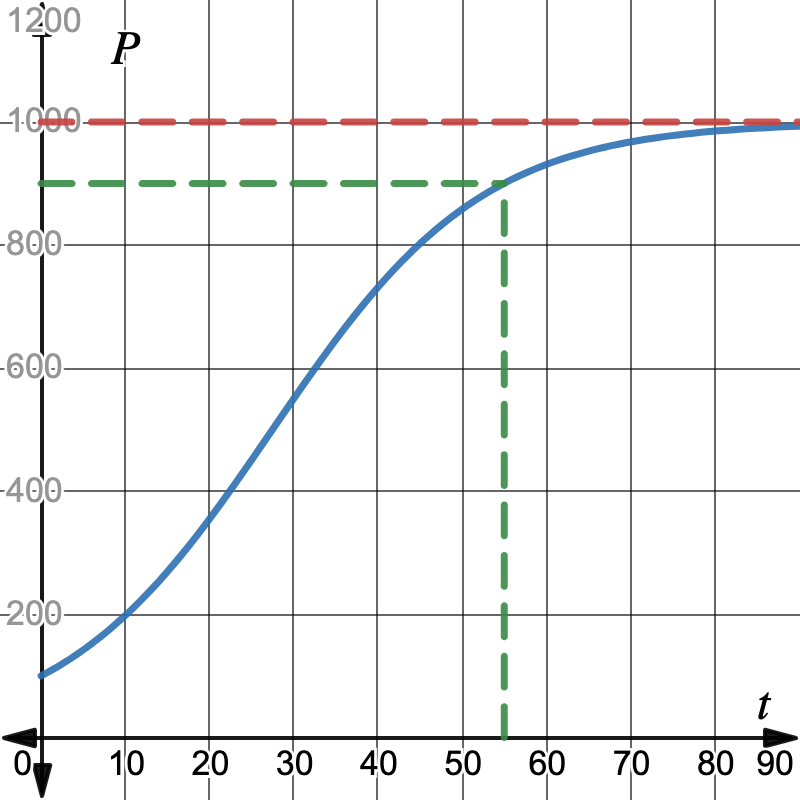
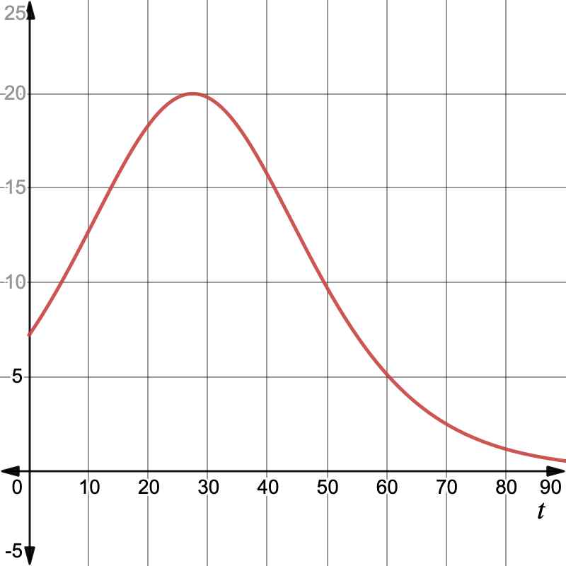

In this section, we use our newfound derivative rules to confirm that exponential and logarithmic functions have the shapes we have observed. We will also learn one more model for population growth and use curve-sketching techniques to analyze its shape.
any \(x\)-intercepts that we can find easily (many times this is not possible without more advanced algebraic methods). Potentially a sign analysis for the function itself that shows where it is above and below the \(x\)-axis, but this requires complete knowledge of all \(x\)-intercepts.
the behavior of the function at any non-domain points, meaning the limits as \(x\to c\) for any value \(x=c\) not in the domain of the function. We make special note of any holes or vertical asymptotes.
We know from our initial exploration of \(e\) that \(2\lt e\lt 3\text{,}\) and in particular that \(e>1\text{.}\) This means that the graphs of \(e^x\) has the same general shape and behavior as the graphs of \(b^x\) for \(b>1\text{.}\) Because of this, we already know the limits of \(e^x\) and \(\ln x\) as \(x\to\pm\infty\text{:}\)
\(x\)-intercepts and sign of \(f(x)\): For \(f(x) = e^{kx}\) when \(k>0\text{,}\) we know that \(f(x)\) is always positive, since any power of the positive number \(e\) will be positive. Thus there are no \(x\)-intercepts.
even or odd symmetry. There is no even or odd symmetry since \(f(-x) = e^{-kx}\) is neither equal to \(f(x) = e^{kx}\) nor equal to \(-f(x) = -e^{kx}\text{.}\)
Vertical Asymptotes. Since \(f(x) = e^{kx}\) is never undefined, there are no vertical asymptotes (or any other types of discontinuities whose limits we must evaluate).
First-derivative information The derivative is \(f'(x) = ke^{kx}\text{,}\) which is never 0 and never undefined. It is always positive, since \(k\) is positive and \(e^{kx}\) is positive for all \(x\text{.}\) Thus \(f(x) = e^{kx}\) is always increasing.
Second-derivative information The second derivative is \(f''(x) = k^2e^{kx}\text{,}\) which is also always positive for the same reasons, and thus \(f(x) = e^{kx}\) is always concave up.
Fill in the Blank The function \(f(x) = Ae^{kx}\) models exponential growth when \(k\)\rule[-.25em]{.25in}{1pt} and models exponential decay when \(k\)\rule[-.25em]{.25in}{1pt}.
Sketch an accurate labeled graph of the function \(f(x) = \dfrac{6}{4-2^x}\text{.}\) Include complete sign chart analyses of \(f,
f'\text{,}\) and \(f''\text{,}\) and calculate any relevant limits.
Limits. Since the domain of \(f\) is \((-\infty,2)\cup(2,\infty)\text{,}\) we must investigate the limits of \(f(x) = \frac{6}{4-2^x}\) as \(x\to\pm\infty\) and as \(x\to 2\) from the left and the right.
Thus the graph of \(f\) has a vertical asymptote at \(x=2\text{,}\) where the graph approaches \(\infty\) to the left of 2 and approaches \(-\infty\) to the right of \(2\text{.}\)
Derivatives: Let’s begin by finding and simplifying the first and second derivatives of \(f(x)\text{.}\) The first derivative of \(f(x) = 6(4-2^x)^{-1}\) is
Differentiating that result using the quotient rule and then factoring to simplify as much as possible so that we can easily identify roots, we find that the second derivative of \(f\) is
To determine the intervals on which \(f,
f'\) and \(f''\) are positive and negative we must first locate the values of \(x\) for which these functions are zero or do not exist. The function
we can see that it is never zero (since \(2^x\) is never zero), but is also undefined at \(x=2\text{.}\) Thus \(x=2\) is the only critical point of \(f\) and the only point we will mark on the number line for \(f'\text{.}\)
We now know that \(f(x)\) is positive, increasing, and concave up on \((-\infty,2)\) and negative, increasing, and concave down on \((2,\infty)\text{.}\) The graph has no \(x\)-intercepts, no extrema, and no inflection points. The graph of \(f\) has a vertical asymptote at \(x=2\text{,}\) where the graph approaches \(\infty\) to the left of 2 and approaches \(-\infty\) to the right of \(2\text{.}\) The graph of \(f\) has two horizontal asymptotes: at \(y=0\) on the right and at \(y=\frac{3}{2}\) on the left.
\(f(x)\) has no even or odd symmetry since \(f(-x) = \ln (-x)\) is not even defined for the same values of \(x\) for which \(f(x)\) is defined (its domain is \((-\infty,0)\)).
The first derivative is \(f'(x) = \frac{1}{x}\text{,}\) which is positive on the domain \(x>0\text{,}\) and thus \(f(x) = \ln x\) is increasing on its domain.
To determine the domain of \(f(x)\text{,}\) we realize that we need to require \(x^5-32>0\text{.}\) This means \(x^5>32\text{,}\) or \(x>(32)^{1/5}=2\text{.}\) In interval notation, the domain of \(f(x)\) is \((2,\infty)\text{.}\)
The \(x\)-intercepts of \(f(x)\) are \(x\) values where \(\ln(x^5-32)=0\text{,}\) or when \(x^5-32=1\text{.}\) This happens when \(x=(33)^{1/5}\approx 2.0123\text{.}\)
Since \(\ln x\) has a vertical asymptote as \(x\to0^+\text{,}\) we see that \(f(x) = \ln(x^5-32)\) will have a vertical asymptote where \(x^5-32\to 0^+\text{,}\) meaning as \(x\to2^+\) since \(32 = 2^5\text{:}\)
so \(f(x)\) has no right horizontal asymptote. Additionally, \(f(x)\) has no left horizontal asymptote, since the domain is \((2,\infty)\text{,}\) so \(\ds\lim_{x\to-\infty} \ln(x^5-32)\) does not exist.
in Example 6.7.11, and can use this to find the critical points of \(f(x)\text{.}\) The roots of \(f'(x)\) are values where \(5x^4=0\text{,}\) so \(x=0\text{.}\) The values where \(f'(x)\) does not exist are values where \(x^5-32=0\text{,}\) so \(x=2\text{.}\) However, neither \(x=0\) nor \(x=2\) are in the domain of \(f(x)\text{,}\) so \(f\) has no critical points. Therefore, we test one value in the domain of \(f(x)\) to see if \(f\) is increasing or decreasing on its domain. We see that \(f'(3)=\frac{5(3)^4}{(3)^5-32}=\frac{405}{211}>0\text{,}\) so \(f\) is increasing from \((2,\infty)\text{.}\)
to find inflection points and intervals of concavity. The roots of \(f''(x)\) are values where \(x^3(-5x^5-32)=0\text{,}\) so \(x=0\) or \(-5x^5-32=0\text{,}\) so roots of \(f''(x)\) are \(x=0\) and \(x=\left(\frac{32}{5}\right)^{1/5}\approx1.449\text{.}\) The values where \(f''(x)\) does not exists are values where \(x^5-32=0\text{,}\) so \(x=2\text{.}\) Again, none of these values is in the domain of \(f(x)\text{,}\) so \(f\) has no critical points. We test one value in the domain of \(f(x)\) to see if \(f\) is concave up or concave down on its domain. We see that \(f''(3)=\frac{3^3(-1247))}{44521}\lt 0\text{,}\) so \(f\) is concave down from \((2,\infty)\text{.}\)
For the function \(g(x) = x\log_2 x\text{,}\) determine its domain and first and second derivatives. We will sketch its graph together at the start of class.
Subsection7.1.5Exponential Functions Grow Proportionally to Themselves
Recall that we motivated the development of exponential functions by observing that they model percent change. We have observed in several different ways that exponential functions grow according to their size, doubling and halving over constant periods of time. Now that we can compute derivatives of exponential functions, we can state this same fact in another way:
Another way to say this is that all exponential functions have the property that their derivatives are constant multiples of the original function. For example \(\frac{d}{dx}(e^{2x}) = 2e^{2x}\) is just 2 times the original function \(e^{2x}\text{.}\) In fact, the converse (opposite direction) is also true, although proving it is true is outside the scope of this course: if a function’s derivative is proportional to the function, that function must be an exponential function. Together, both of these observations give us the following two-sided statement, which will prove useful in many application problems:
Recall that one quantity \(y\) is proportional to another quantity \(x\) if \(y\) is a constant multiple of \(x\text{.}\) Therefore the preceding theorem gives us a nice characterization of exponential functions:
How does this fit with what we already know? We know already that if a word problem states that the rate of change of a function is constant, this tells us that the function is linear. Similarly, by Theorem 7.1.13, if a word problem states that the rate of change of a function is proportional to the function itself, we immediately know that that function is exponential. Then it is just a question of finding values \(A\) and \(k\) to determine the function \(f(x) = Ae^{kx}\) that models the situation.
As we have seen, exponential functions often arise when modeling populations. For example, a larger population can produce greater numbers of offspring than a smaller population and can therefore grow at a faster rate.
Suppose a population of wombats on a small island is growing at a rate proportional to the number of wombats on the island. If there were 12 wombats on the island in 1990 and 37 wombats on the island in 1998, how many wombats were on the island in the year 2010?
We are given that the rate of change \(W'(t)\) of the population of wombats is proportional to the population \(W(t)\) of wombats at time \(t\text{;}\) in other words,
\begin{equation*}
W'(t) = kW(t)
\end{equation*}
for some real number \(k\text{.}\) By Theorem 7.1.13, this means that the population \(W(t)\) of wombats on the island must be an exponential function
Thus \(W(t) = 12e^{0.14 t}\text{.}\) Using this function, we can now easily calculate the number of wombats that were on the island in the year 2010. Since 2010 is 20 years after 1990, we need to find
The number of worms in a backyard garden increases every year by a percentage growth rate of \(7\%\text{.}\) What is the equivalent continuous growth rate of the worm population? Begin by writing down a model of the form
Subsection7.1.6A more realistic model for population growth
If we assume that a population grows at a rate that is proportionate to the size of the population, it follows that the population grows exponentially according to the model
\begin{equation*}
P(t) = Ae^{kt}
\end{equation*}
where \(A\) is the initial population and \(k\) is the continuous growth rate of the population. Since \(k>0\text{,}\) we know that \(e^{kt}\) is an always increasing, always concave up function that grows without bound. While \(P(t) = Ae^{kt}\) may be a reasonable model for how a population grows when it is relatively small, because the function grows without bound as time increases, it can’t be a realistic long-term representation of what happens in reality. Indeed, whether it is the number of fish who can survive in a lake, the number of cells in a petri dish, or the number of human beings on earth, the size of the surroundings and the limitations of resources will keep the population from being able to grow without bound.
In light of these observations, a different model is needed for population, one that grows exponentially at first, but that levels off later. Calculus can be used to develop such a model, and the resulting function is usually called the logistic function, which has form
Figure7.1.16.Graphs of logistic functions are sigmoidal. They increase at an increasing rate until their inflection point, and then increase at a decreasing rate.
Populations that are modeled by the logistic function initially have rapid growth, followed by a declining rate of growth. They approach a horizontal asymptote as \(t\to\infty\text{,}\) meaning that the population does not grow past a certain threshold. The value of the asymptote is often referred to as the carrying capacity of the population.
We can confirm this by observing that \(A=1000\) is the value of the carrying capacity if we compare to the formula given for a general logistic function.
Let’s see how long it will take the population to reach 90% of the carrying capacity, meaning how long it will be until there are 900 echidnas. The population reaches 900 when
The population seems to be growing quite rapidly, and we wonder what will happen as it nears the carrying capacity. To further explore how the population of echidnas grows, let’s compare the rates of change after 0, 40, and 80 years. The derivative is easier to calculate if we first rewrite \(P\) as
The initial growth rate is 7.2 echidnas per year (when the population is 100 echidnas). After 40 years the population is much larger, 732 echidna, and the growth rate is 15.71 echidnas per year, more than double the initial growth rate. But after 80 years, the population is \(P(80)\approx 985\text{,}\) very close to the carrying capacity, so the growth rate is much smaller; about 1.16 echidnas per year. The function \(P(t)\) is graphed to the left below, and its derivative \(P'(t)\) is graphed to the right. We can see on the graph of \(P(t)\) that the population does indeed appear to be approximately 900 after 55 years, and that as the population approaches 1000 echidnas, its growth slows. From the graph of \(P'(t)\text{,}\) we can see that the growth rate increases to a maximum around \(t=27\) years and then decreases to almost 0.


\(P'(t)\text{,}\)Figure7.1.18.The graph of \(P(t)\text{,}\) the echidna population.
The inflection point on the graph of \(P(t)\) occurs at \(t\approx 27\text{,}\) the same \(t\)-value where the graph of \(P'(t)\) has its maximum, and on the graph of \(P(t)\text{,}\) this point appears to have a \(y\)-value of \(P(27)\approx 500\text{,}\) which is half of the carrying capacity. It would make sense that the population’s growth starts to slow when the population reaches about half of the carrying capacity, but is this true in general?
Let’s use our curve-sketching techniques to explore the shape of the logistic growth function and see which of the observations in Example 7.1.17 are always true.
The graph in Figure 7.1.16 suggests that \(P(t)\) has horizontal asymptotes. We calculate the limits of \(P(t)\) as \(t\to\pm\infty\) to confirm this and to find their values.
In other words, if we were to go "backward" in time, the population would eventually shrink to zero. This may or may not be realistic, depending on the precise context of the problem.
Note that since \(k, A, M\text{,}\) and \(e^{-kt}\) are all positive, the numerator of \(P'(t)\) is positive. Similarly, \((1+Me^{-kt})^2\) is always positive since the expression \(1+Me^{-kt}\) is never zero and is being squared.
Now we compute \(P''(t)\) and determine the inflection point where the growth of the logistic function slows down. Warning! The following computation is awful and you can feel free to skip to the end. It is more computationally intensive than you are responsible for being able to do. I include it only so you see that there is no "magic" here, just (seriously nasty) algebra.
So after ALL of that, we see that yes indeed, the population growth will peak at \(\frac{A}{2}\text{,}\) meaning at half of the carrying capacity, and will then will start to decrease.
is \(\left(\frac{\ln(1/M)}{-k}, \frac{A}{2}\right)\) to confirm that the growth of the echidna population in Example 7.1.17 is the greatest after approximately 27 years, when the population is 500 echidna.
Key ideas: Exponential functions are precisely those functions that grow proportionally to their size. Populations that are limited by a carrying capacity can be modeled using the logistic function,
which grows quickly at first and then more slowly after the greatest growth rate at the point \(\left(\frac{\ln(1/M)}{-k}, \frac{A}{2}\right)\text{.}\)
Other ideas reinforced: Limits and the first and second derivatives of a function determine the overall shape of the graph of a function. We can accurately graph a function by finding vertical and horizontal asymptotes, intervals of increase/decrease and concavity, and local extrema and inflection points.